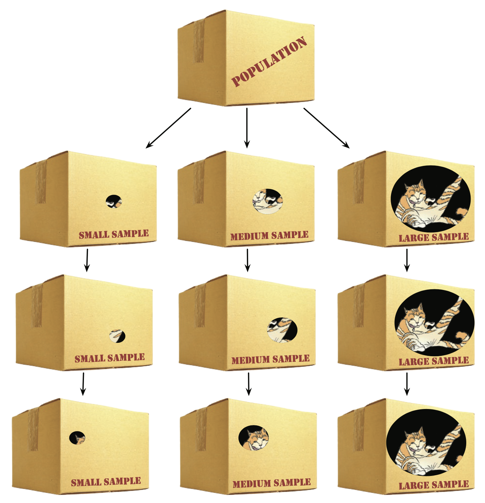

Research
Process
The Research Process
Theory
“Theory is a well-established principle or set of general principles to explain a broad range of observations.”
Theory = Explanation
Theory
“normally scientists are interested in theories that apply very generally.”
Generalization
🤓 Tellme-Moore: Most Famous & Impactful Theories
- Physics
- Biology and Medicine
- Mathematics
- Philosophy
- Psychology and Sociology
- Economics
- Technology and Information
- General Interest
Theory of Relativity (Albert Einstein)
- Special and General Relativity revolutionized our understanding of space, time, and gravity.
Big Bang Theory
- Describes the origin of the universe as a rapid expansion from a singularity ~13.8 billion years ago.
Cell Theory (Schleiden, Schwann, and Virchow) -States that all living organisms are composed of cells, which are the basic units of life.
Germ Theory of Disease (Louis Pasteur, Robert Koch)
- Explains that microorganisms are the cause of many diseases.
Pythagorean Theorem (Pythagoras)
- Relates the sides of a right triangle: a2+b2=c2a2+b2=c2.
Game Theory (John von Neumann, John Nash)
- Studies strategic interactions and decision-making.
- Theory of Forms (Plato)
- Suggests that non-material abstract forms (e.g., beauty, justice) represent the truest reality.
- Utilitarianism (Jeremy Bentham, John Stuart Mill)
- Advocates actions that maximize happiness for the greatest number of people.
- Conflict Theory (Karl Marx)
- Explains societal structures as shaped by conflicts between social classes.
- Maslow’s Hierarchy of Needs (Abraham Maslow)
- Describes a pyramid of human needs, from basic survival to self-actualization.
- Theory of Comparative Advantage (David Ricardo)
- Explains how nations benefit from specializing in and trading goods they produce most efficiently.
- Keynesian Economics (John Maynard Keynes)
- Argues that government intervention can stabilize the economy during recessions.
- Information Theory (Claude Shannon)
- Describes the quantification, storage, and communication of information.
- Turing Machine (Alan Turing)
- A theoretical model for how computers process information.
- Chaos Theory
- Explains how small changes in initial conditions can lead to vastly different outcomes.
- Feminist Theory
- Explores gender inequality and advocates for social, political, and economic equity.
Population
“an entire set of entities is known as population”
A population can be quite diverse but can also be more specific.
Different types of scientists might focus on different populations.
🤓 Tellme Moore: Examples of “population”
- 1. Educational Research
- 2. Healthcare Studies
- 3. Market Research
- 4. Environmental Studies
- 5. Political Surveys
- 6. Customer Feedback
- 7. Wildlife Research
- 8. Manufacturing and Quality Control
- Population: All 12 class students in India.
- Example: If a researcher wants to study the average marks of 12th class students in India, the population would include every 12th class student across the country who has taken the 12th exam.
- Population:
All diabetic patients in a city.
- Example:
A researcher investigating the effectiveness of a new diabetes medication may define the population as all individuals in the city who have been diagnosed with diabetes.
- Population:
All people who purchase smartphones.
- Example:
A smartphone company wants to know the preferences of its target market. The population might be defined as all individuals globally who have purchased a smartphone in the last year.
- Population:
All trees in a forest.
- Example:
An environmental scientist measuring the average height of trees in a forest would consider the population to include every tree in that specific forest.
- Population:
Registered voters in a country.
- Example:
A political poll aiming to predict the outcome of an election would define its population as all registered voters eligible to participate in that election.
- Population:
All customers of a particular online store.
- Example:
If an e-commerce company wants to measure customer satisfaction, the population would include everyone who has made a purchase on their platform.
- Population:
All Bengal tigers in India.
- Example:
A conservationist studying the average territory size of Bengal tigers would define the population as all Bengal tigers living in India.
- Population:
All light bulbs produced by a factory in a week.
- Example:
A factory manager measuring the defect rate in light bulb production would define the population as all light bulbs manufactured in a specific week.
Hypothesis
“you can use existing theory, to generate a hypothesis, which is a proposed explanation of the specific observation that interests you”
Hypothesis = Proposed Explanation
Prediction
A specific outcome you expect to observe if the hypothesis is correct.
Variables
“Elements in the study that are measured or manipulated.”
Independent variable
Dependent variable
Control variable
🤓 Tellme Moore: Academic Performance and Sleep
How They Work Together:
Theory provides the foundation: Sleep impacts cognitive function.
Hypothesis makes the relationship specific: More sleep leads to better exam scores.
Prediction forecasts the result in measurable terms: Students with more sleep score 10% higher.
Variables define the structure of the study: Sleep hours (IV), Exam scores (DV), and controlled factors (like study environment).
Sample
“you want to draw conclusions about the entire population, but it is impractical to collect data from every entity in the popultion.”
“so instead we use a sample which is representative of the wider population”
Sample = Representative
Sample
🤓 Tellme Moore: Customer Satisfaction at “Coffee Bliss”
Objective: The company wants to measure customer satisfaction with their service across all branches.
Definition: The entire group that is the focus of the study.
Example:
All customers who visit Coffee Bliss branches worldwide in a given month.
- This includes millions of customers from different locations, ages, and preferences.
Definition: A subset of the population selected for the study.
Example:
The company randomly selects 1,000 customers across various branches to participate in a survey.
- The sample is smaller than the population but is expected to reflect the larger group.
Definition: A sample that accurately reflects the characteristics of the population.
Example:
To ensure the 1,000 customers represent the population, the company ensures the sample includes:
- Customers from urban, suburban, and rural branches.
- A mix of regular and first-time customers.
- A diversity of ages, genders, and income levels.
If the sample has only customers from urban branches or frequent visitors, it may not represent the entire population accurately, leading to biased results.
- Population: Represents the “big picture” (all customers).
- Sample: Makes data collection feasible (1,000 customers).
- Representative Sample: Ensures findings can be generalized to the whole population (diverse group reflecting all customers).
References